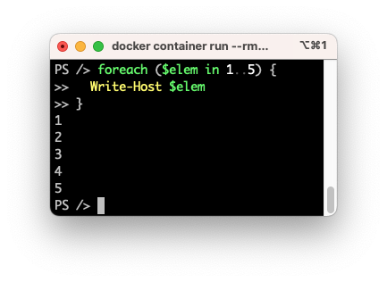

PowerShell 101
Perusteet
Missä ajetaan?
Docker
Jotta sinun on mahdollista tehdä tämän kurssin tehtäviä, sinulla on oltava PowerShell käytössä. Jos teet skriptejä, jotka poistavat tiedostoja tai tekevät jotakin muuta vaarallista, on suositeltavaa ajaa PowerShelliä Docker-kontissa. Tämän pitäisi olla sinulle tuttua jo aiemmasta Bash-osiosta. Kontti noudetaan Docker Hubin sijasta Microsoft Artifact Registry: PowerShell-katalogista. Kontti rakentuu Ubuntun päälle, mutta siihen on asennettu PowerShell riippuvuuksineen, ja vakio CMD ei ole bash, vaan pwsh.
Tip
Jos haluat harjoitella Microsoft Windows -spesifisiä komentoja, kuten Get-Service, tarvitset Windows-ympäristön. Docker luo Linux-kontteja. Emme käsittele Windows-komentoja tässä kurssissa, mutta voit kokeilla niitä omalla koneellasi, mikäli sinulla on Windows-kone käytössäsi.
Local Machine
On kovin tyypillistä, että Dockeria suositellaan lääkkeeksi aivan kaikkeen. Tulet huomaamaan, että jos ajat kaiken koodin väliaikaisessa kontissa, koodin syntaksia värittävä VS Code PowerShell Extension ei toimi. Kyseinen Extension, aivan kuten muiden kielten vastaavat, tarvitsevät pääsyn kielen runtimeen, jotta ne voivat tarjota sinulle koodin täydennystä, syntaksivärittelyä ja muuta.
Helpoin tapa ratkaista tämä? Asenna PowerShell lokaalisti, olit sitten Windows-, macOS- tai Linux-käyttäjä. Voit yhä ajaa vaaralliset tai epävarmat skriptit Docker-kontissa, mutta voit kirjoittaa ja testata skriptisi lokaalisti.
Dev Container
Voit yrittää best of both worlds-ratkaisua Visual Studio Coden Dev Containers -ominaisuuden avulla. Tämä on kuitenkin edistyneempi aihe. Emme käsittele sitä tässä kurssissa.
Mikä se on?
PowerShell on Microsoftin kehittämä skriptauskieli ja komentotulkki. Se on suunniteltu alunperin Windows-ympäristöön, mutta nykyään se on saatavilla myös Linuxille ja macOS:lle. Jos tarkkoja ollaan, niin tuotteita on kaksi, joista vain toinen on saatavilla muille kuin Windowsille:
- Ⓜ️ Windows PowerShell
- Asentuu Windowsin mukana. Perustuu kaupalliseen .NET Frameworkiin. Tuorein versio on 5.1 eikä Microsoft enää kehitä sitä.
- Executable:
powershell.exe
- Ⓜ️🍎🐧 PowerShell
- Asennetaan erikseen. Tuorein versio on 7.x ja Microsoft kehittää sitä aktiivisesti.
- Executable:
pwsh
Warning
Huomaa, että kaikkia moduuleita tai cmdlettejä ei ole saataville kaikille alustoille. Esimerkiksi moduulin Microsoft.PowerShell.Management komento Get-Service ei toimi Linuxissa. Tämä johtuu .NET Frameworkin ja .NET Coren eroista. 1
Entäpä .NET?
Dotnet (.NET) on kehitysympäristö (engl. developer platform), jolla on useita tehtäviä ja joka koostuu useista eri osista. Ekosysteemiin kuuluu esimerkiksi ajoympäristö (engl. runtime envinronment) Common Language Runtime (CLR), joka on vastuussa koodin suorittamisesta Java-virtuaalikoneen tapaan. Suoritettava koodi on Common Intermediate Language (CIL) tavukoodia. Ekosysteemi sisältää näiden lisäksi kirjastoja, kääntäjän, SDK ja muuta. Varsinaiset CIL-kieleksi käännettävät dotnet-ohjelmointikielet ovat C# ja F#. PowerShell on sekä tulkki (komentokehote, CLI) että skriptauskieli, joka käyttää .NETin kirjastoja. Sitä ei käännetä, vaan sitä tulkataan dynaamisesti ajon aikana PowerShell runtimen toimesta. 2
Jos ylempi kappale meni aivan ohi, niin tärkeää on sisäistää, että .NET kirjastoja voi kutsua PowerShellistä, koska se on .NET-ympäristössä toimiva kieli. PowerShellin cmdletit ovat käännettyjä .NET-kirjastojen kutsuja. Käytännössä seuraavat kaksi tekevät jossain määrin saman asian, joskin alempaa muotoa on luonteva käyttää vain silloin, kun sopivaa cmdletiä ei ole olemassa:
# PowerShell cmdlet
Get-Process
# .NET Library the cmdlet wraps
[System.Diagnostics.Process]::GetProcesses()
Info
Namespacen ensimmäinen osa, esim. System, voidaan usein jättää pois. Näin esimerkiksi [System.Math] on sama kuin [Math].
Dotnet-kirjastojen avulla voi saada C#:stä tuttuja toiminnallisuuksia työkalupakkiisi. Esimerkkinä tästä olkoot luvun korottaminen potenssiin, joka hoituu PowerShellissä näin:
Ja C#:ssä näin:
using System;
class Program {
static void Main() {
double result = Math.Pow(10, 2);
Console.WriteLine(result);
}
}
Erot Bashiin
PowerShellissä käsitellään pääasiassa objekteja. Tämä tulee jatkumaan myöhemmin Python-osiossa: myös se kieli on rankasti objekteihin suuntautunut.
"A key difference with Bash is that it is mostly objects that you manipulate rather than plain text" 3
Käytännössä tämä tarkoittaa sitä, että esimerkiksi kokonaisluku on objekti, ja objektilla on metodeja. Kärjistettynä Bashissä kaikki on vain tekstiä, eli merkkijonoa, jota voidaan tulkita esimerkiksi lukuja aritmeettisissa operaatioissa (let tai $(( expression ))). PowerShellissä luku on luku, merkkijono on merkkijono ja esimerkiksi IP-osoite on IP-osoite. Kaikilla niillä on omat metodinsa. Jos putkitat yhden komennon tulosteen toisen komennon syötteeksi, niin kyseinen komentoketju (engl. command chain) sisältää useita eri objekteja listana. Bashistä tuttu grep, awk tai sed parsiminen vaihtuu objektien käsittelyksi. Tulet tutustumaan tähän myöhemmin harjoitusten muodossa.
Tip
Voit siis ajaa one-liner komennon: $number = 10; $number.GetType(). Ruutuun tulostuu taulukkomuotoinen näkymä, jonka sisällöstä ja muodosta vastaa Out-Default. Huomaa, että komennossa kutsutaan numeron omaa metodia GetType(), joka palauttaa tiedon siitä, minkä tyyppinen objekti on kyseessä. Tätä et voi Bashissä tehdä.
Ensimmäinen kontti
Alla olevan docker container run komento on Bash-osiosta tuttu, joskin käytämme eri imagea. Komento käynnistää PowerShellin Docker-kontissa.
🍎 Apple Silicon -käyttäjille
Yllä mainittu image ei välttämättä toimi macOS-koneella, jossa on Silicon-prosessi (M1, M2, ...). Voi toki olla, että tilanne on muuttunut sitten tämän ohjeen kirjoittamisen, mutta jos kyseinen image kaataa Terminaalin jatkuvasti, kokeile arm64:lle käännettyä imagea, joka perustuu Microsoftin kehittämään Mariner-jakeluun (alias Azure Linux).
Docker-komento ja sen parametrit (--rm ja -it) ovat sinulle jo tuttuja Bash-osiosta. Alla olevassa koodissa tulostetaan PowerShellin versiotiedot Docker-kontissa. Alempana näet tulosteen. Komento on ajettu samana päivänä sekä Ubuntu- että macOS-koneella, jälkimmäisessä käyttäen mariner-imagea.
Komennot ja apu
Varsinaiset komennot ovat cmdlet-tyyppisiä. Ne koostuvat verbistä ja substantiivista. Alla esimerkki:
Verb-Noun: pseudoesimerkkiGet-Process: hakee prosessitGet-Alias: hakee aliasit komennoilla (esim.dironGet-ChildItemkomennon alias)Update-Help: päivittää PowerShellin helpin, ladaten rutkasti esimerkkejä ja lisäapua.
Mistä tahansa komennosta saat helpin muutamalla eri tavalla. Alla esimerkkejä, joissa halutaan saada lisää tietoa Get-ChildItem-komennosta:
# Kenties alkuun haluat ajaa:
Update-Help
# Get-Noun muoto
Get-Help Get-ChildItem
# Huomaa, että se ei ole case-sensitiivinen
get-help get-childitem
# Output on helpompi lukea less-ohjelmassa
Get-Help Get-ChildItem | less
# Lyhyt muoto (alias)
help Get-ChildItem
# Kysymysmerkki
Get-ChildItem -?
Kyseinen Verb-Noun-cmdlet-pohjainen syntaksi on PowerShellin ydin. Esimerkiksi Get-Process hakee prosessit ja Stop-Process pysäyttää prosessin.
Skripti
Aivan kuten Bashin kohdalla, myös PowerShellissä skripti on tiedosto, joka sisältää yhden tai useamman komennon. Aivan kuten Bash, PowerShell on myöskin tulkki, jossa toimii samat komennot kuin skriptitiedostoissa.

Kuva 1: Yksinkertainen for-silmukka PowerShellissä ilman erillistä skriptitiedostoa. Komento on ajettu kontissa.
Sisältö
Skripti on tiedosto, joka sisältää yhden tai useamman komennon. Tämä on sinulle Bashista tuttua, mutta PowerShellin kohdalla konvention mukainen tiedostopääte on .ps1. Huomaa, että shebang ei ole tarpeen, jos tiedosto ajetaan nimenomaan PowerShellissä. Tiedoston ei myöskään tarvitse olla executable eli chmod +x ei ole tarpeen.
Suorituspolitiikka (Ⓜ️ Win)
On tärkeää huomata, että jos ajat PowerShelliä Windows-ympäristössä, sinun tulee ottaa huomioon execution policy. Kyseinen asetus säätää sitä, missä tapauksissa skriptejä saa suorittaa. Tavallisessa Windows Home/Pro -ympäristössä execution policy on Restricted, joka tarkoittaa, että mitään skriptejä ei saa ajaa. Yleisesti suositeltu asetus on RemoteSigned.
Jos et ole aikaisemmin tehnyt mitään PowerShell-skriptien ajoon liittyviä toimenpiteitä, suorita seuraava komento:
Tip
Jos ajat PowerShelliä Docker-kontissa tai muutoin Linuxissa, sinun ei tarvitse huolehtia tästä: policy on vakiona Unrestricted, eikä RemoteSigned ole edes tuettu.
Tietoturva-offtopic
RemoteSigned ei välttämättä toimi aivan kuten sen arvaisi toimivan. Se, onko tiedosto Internetistä ladattu vai ei, määrittyy Zone.Identifier -attribuutin perusteella. Tämä ongelma on kuitenkin helppo kiertää: poista attribuutti tiedostosta. Jos kokeilet ladata Invoke-RestMethod-komennolla skriptin, saatat yllättyä, kun sillä ei olekaan koko Zone.Identifieriä asetettuna, vaikka voisi kuvitella. Myös koko policy on helposti kierrävissä.
Execution Policy ei ole siis sinänsä vahva turvamekanismi. Se lähinnä ehkäisee käyttäjää ajamasta skriptejä huomaamattaan.
Tiedoston luominen
Tiedoston voi luoda millä tahansa tekstieditorilla, mutta on suositeltavaa käyttää Visual Studio Codea. Tämän käyttöön tutustutaan läsnätunneilla.
Skriptin ajaminen
Skriptin voi ajaa monella tapaa. Tyypillinen tapa on relatiivinen polku. Koska me olemme samassa hakemistossa kuin skripti, relatiivinen polku on yksintaisesti ./<tiedostonimi>:
Absoluuttista polkua käyttäen:
Kyseisen binäärin argumenttina:
Tehtävät
Tehtävä: PowerShell Hello World
Luo skriptitiedosto hello.ps1, joka tulostaa tekstin "Hello World".
Varmista, että saat sen ajettua ympäristössä, jossa koet kehittämisen mieluisaksi. Saat käyttää fyysistä konetta, virtuaalikonetta, Dockeria tai vastaavaa.
Suositus: Docker
Tehtävä: PowerShell informaatiohaku
Toimi kuten aiemmassa Bash-tiedonhakutehtävässä. Muodosta itsellesi hyödyllinen katalogi lähteistä. Alla muutama suositus, mistä aloittaa etsintä:
- PowerShell Documentation. Virallinen dokumentaatio. Varmista, että seuraat oikean version dokumentaatiota.
- Markus Fleschutzin PowerShell repo. Sisältää sekä cheat sheetin että satoja PowerShell-skriptejä.
- Learn PowerShell in Y Minutes. Cheat Sheet -tyylinen opas, josta selviää ydinasiat.
- KAMK Finna. Hakusanalla "PowerShell" löytyy esimerkiksi Jonathan Hassellin kirja "Learning PowerShell" vuodelta 2017.
Myös Bashin kohdalla mainitut kirjalähteet eli KAMK Finna, Humble Bundlen ja O'Reillyn kirjasto ovat toimivia paikkoja etsiä tietoa - jälkimmäiset kaksi ovat toki maksullisia. Erityismaininnan arvoinen maksullinen kirja on Don Jones ja Jeffrey Hicksin Learn PowerShell Scripting in a Month of Lunches 2nd ed. (Manning).
Lähteet
-
Microsoft. Differences between Windows PowerShell 5.1 and PowerShell 7.x. https://learn.microsoft.com/en-us/powershell/scripting/whats-new/differences-from-windows-powershell ↩
-
Microsoft. Introduction to .NET. https://learn.microsoft.com/en-us/dotnet/core/introduction ↩
-
Schandevijl et. al. 2025. Learning PowerShell in Y Minutes. https://learnxinyminutes.com/powershell/ ↩